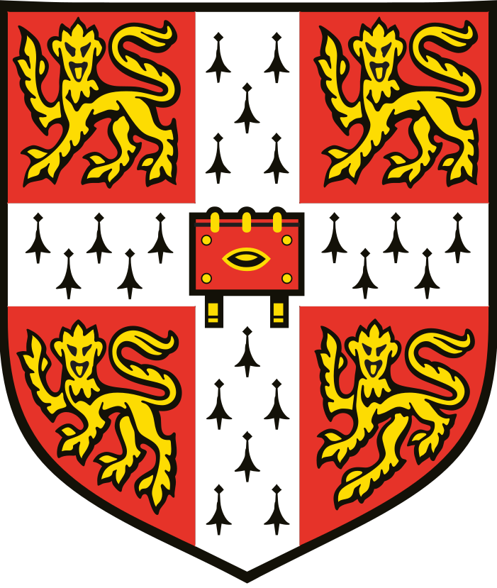

Felipe Etchevers
Contact
- Phone(UY):
+598-97531880 - Mail:
felipe.etchevers@gmail.com - Outlook:
felipe.etchevers@correo.ucu.edu.uy - LinkedIn:
Felipe Etchevers
Studies
Languages
- Native Spanish
-  C1 Cambridge Advanced English Level (CAE)
Programming Languages/ Others
- Python
- C#
- Git / GitHub
- HTML / CSS / JavaScript
- POO-Object Oriented Programming
- Bootstrap
Work Experience
-
 Technology Consulting (Ernst Young - 2022 - Present)
Technology Consulting (Ernst Young - 2022 - Present)
I worked as a technology consultant specialized in cybersecurity. My colleagues and I participated mainly assessing clients about common cybersecurity practices, identifying vulnerabilities and potential threats to their information systems and networks. We documented cybersecurity policies and procedures to mitigate risks and ensure compliance with industry standards and regulations, including guidance and assesment to the clients on best practices for securing their data and technology.